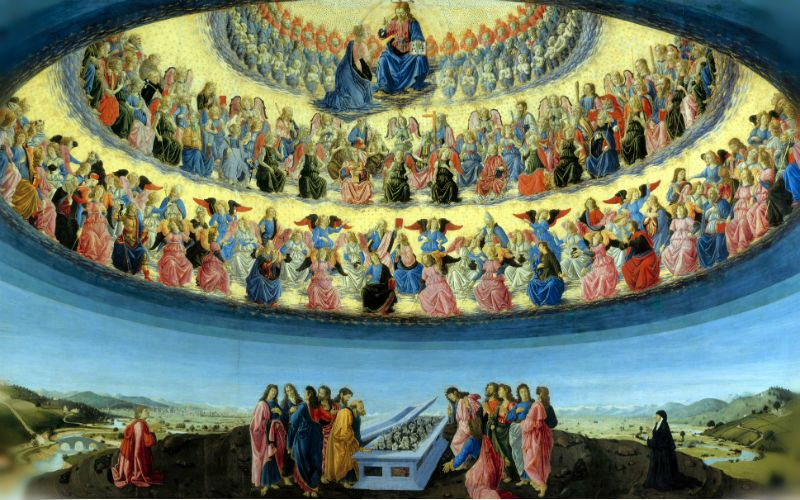
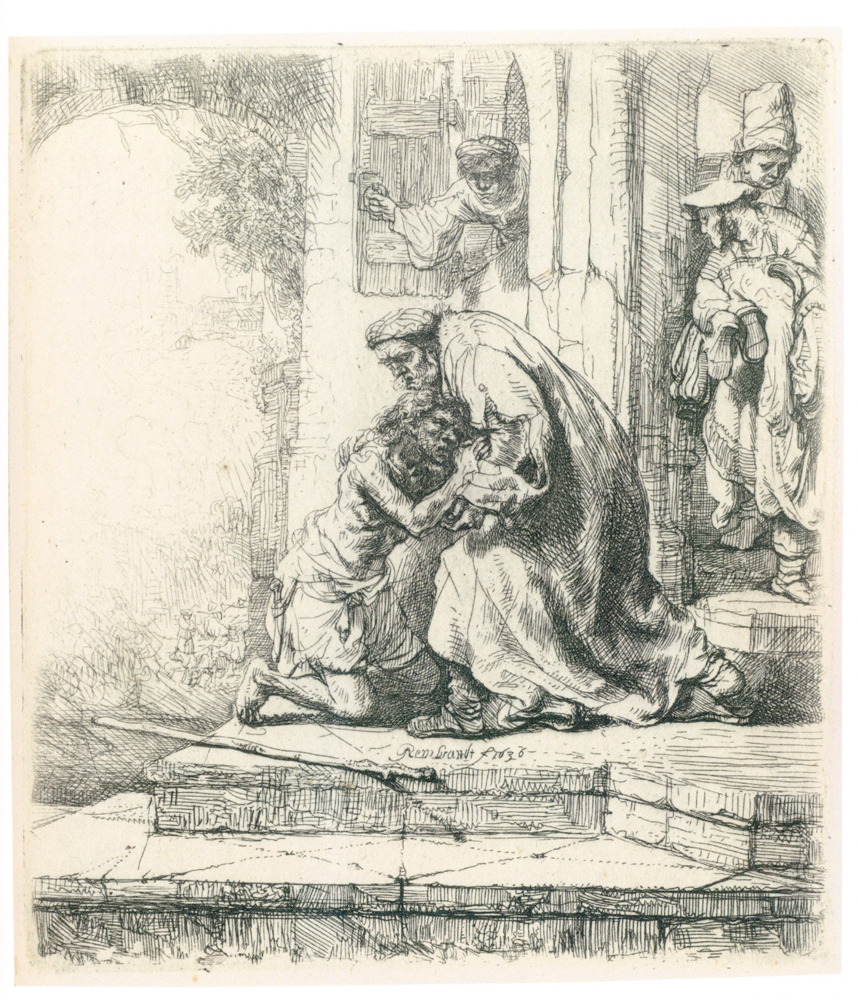
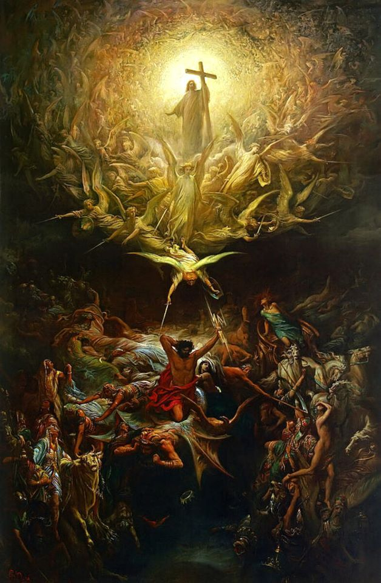
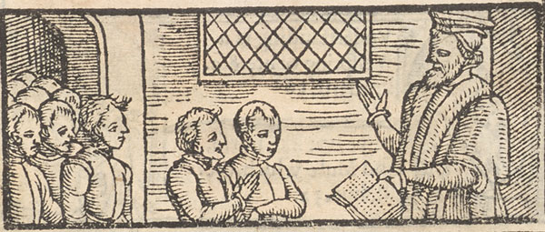

天国的比喻
今天的问题
- 为什么耶稣用比喻说明天国？
- 天国已经来到，为何罪恶仍在？
- 基督徒在天国中的地位和责任是什么？
温习-经文与背景
- 耶稣已经宣告“天国近了”，也以教训和神迹显明君王的权柄（太4:17；12:28）
- 悔改与信心是进入天国的条件（太4:17；可1:15）
- 马太福音13章-天国如何在基督里开展
- 天国-神在基督里的王权与统治 ，神恩典计划的最高体现。
- 天国的层面-已然与未然，属灵与实体
- 已然： 君王耶稣已经来到，胜过罪与撒但，召聚属祂的百姓（太12:28；西1:13-14）
- 未然： 罪恶仍然存在，义人与恶人最终分开要等到“世界的末了”（太13:40-43）
为什么用比喻？

- 比喻（Parable）将日常生活的图画与属灵奥秘相扣，要求听者投入真心的聆听与回应
- 对门徒，比喻启示“天国的奥秘”（太13:11、16-17）
- 对刚硬拒绝耶稣的人，比喻也成为遮蔽，叫他们听是听见却不明白（太13:13-15；参赛6:9-10）
撒种的比喻
- 种子是“天国的道”；同一真道临到人，反应却不同（太13:3-23）
- 路旁： 不明白，恶者夺去所撒的道
- 石头地： 患难或逼迫来到便跌倒
- 荆棘地： 思虑与钱财的迷惑排挤真道
- 好土： 听道又明白且结果，结实三十、六十、一百倍
- 属灵明白是神所赐的恩典；所结的果子不是为了赚取救恩，而是更新生命的证据（太13:11；弗2:8-10）
- 神借圣道与圣灵使人归服基督；（帖撒罗尼迦后书 2:13-14）
稗子的比喻

- 人子撒好种；仇敌撒稗子；两者一同生长，直到收割的时候（太13:24-30、37-39）
- 耶稣解释：撒种者是人子，田地是世界，好种是天国之子，稗子是恶者之子，收割是世界的末了
- 仇敌作恶，却不能推翻神的计划；最后审判属于基督
- “田地是世界”（太13:38）
- 可见教会在今世确有真伪混杂；但这比喻不是取消教会纪律的理由（太18:15-17；林前5:12-13）
- 信徒要辨别真道、牧养劝戒
芥菜种与面酵：微小、隐藏、有力
- 芥菜种： 天国好像一粒极小的芥菜种，后来长大，飞鸟来宿在枝上（太13:31-32）
- 面酵： 妇人把面酵藏在三斗面里，直等全团都发起来（太13:33）
- 芥菜种显出外在成长；面酵显出内在渗透：安静却彻底，终必无法忽视
- 真正增长来自神；这成长既渐进又确定，国度终必扩展、充满，永不败坏（亚4:10；林前3:6-7；但2:44-45）
- 不要藐视微小的起头，也不要因一时看不见果效就灰心；信靠圣道与圣灵
藏宝与寻珠：认出至宝

- 发现宝藏的人欢喜变卖一切；商人遇见重价珠子，也变卖所有（太13:44-46）
- 天国的无比价值
- 天国是整个人生的至高价值
- 生命的动力：舍己与付代价，不是出于律法主义的苦行，而是被基督的荣美所征服后，出于喜乐的必然回应（腓 3:7-9）。
白白恩典与门徒代价：神学次序的整合
- * 白白恩典（称义的独一根基）：我们称义完全基于基督的完美顺服与代赎，唯独借着信心领受，绝无半分人的功劳（罗 3:23-24, 28）。
- * 门徒代价（成圣的必然果效）：蒙恩得救的人，必然响应基督的召呼——舍己、背起十字架来跟从主（太 16:24-26）。
- * 至关重要的次序：恩典先于顺服，生命引发行动。加尔文曾言：“唯独信心使人称义，但称义的信心决不孤立。”我们不是通过付代价来获得基督，而是因为基督先成为了我们的至宝，恩典才驱使我们做出圣洁的选择。
撒网与收割：末日
- 末了神要把恶人从义人中分别出来（太13:47-50）
- 稗子： 义人在父的国里（太13:43）
- 撒网： 恶人面对真实审判
- 基督是再来的审判者与君王；这安慰信徒，也呼召罪人悔改（太25:31-34）
- “有耳可听的，就应当听！”（太13:43）
已然与未然：基督已经作王，国度尚待成全

- 已经开启： 君王来到，借十字架与复活得胜，神国真实临到
- 今日扩展： 圣道被传扬，麦子与稗子在世界并存，天国在教会与信徒中扩展
- 将来成全： 基督荣耀再来，带来新天新地
基督是比喻的中心
- 天国的信仰就是以基督为中心的信仰（Geerhadus Vos）
- 天国借着祂的降生、顺服、十字架、复活和升天被确立
- 十字架看来微小、软弱、失败，却是必在末后得胜的（西2:14-15）
- 复活保证最后的收割与审判必然来到（徒17:31）
- 进入天国是悔改并信靠君王基督（可1:15）
释经时要谨慎
- 先抓住耶稣亲自给出的解释（撒种、稗子、撒网）
- 找出比喻的主要重点，不过度灵意解经
- 比较相邻比喻：芥菜种与面酵彼此补充，强调成长和遍及
七幅图，一幅天国全景

讨论问题

- 你目前最像四种土中的哪一种？你需要怎样回应神的道？
- 你曾在哪些微小改变中看见神国工作？
- 若基督真是至宝，你本周的时间、金钱或关系会有什么具体改变？
结论
- 天国已经在君王耶稣里临到，正在借圣道与圣灵扩展
- 天国看来微小、隐藏，却绝不会失败
- 基督再来时，祂要审判罪恶，使国度完全显明
- 真道撒在人心中：要听道并结果
- 善恶暂时混杂：要守真理
- 天国比万有宝贵：当基督放在首位
- 求主赐我们能听的耳、受教的心、看见至宝的福音，并忠心等候君王
- 总结：天国已在君王耶稣里不可逆转地临到，正借圣道与圣灵大能扩展；尽管当下看似微小、充满张力，但它绝不会失败，并必在基督再来时完全显现！
References
- 《圣经》，马太福音13:1-52；并参马太福音12:28、25:31-34，马可福音1:15。
- Joel R. Beeke, “How the Kingdom Comes,” *Ligonier Ministries*: https://learn.ligonier.org/devotionals/how-kingdom-comes
- Ligonier Ministries, “Mustard Seed and Leaven”: https://learn.ligonier.org/devotionals/mustard-seed-and-leaven
- Ligonier Ministries, “The Parables”: https://learn.ligonier.org/guides/the-parables
- Christopher W. Morgan, “The Kingdom of God,” *The Gospel Coalition*: https://www.thegospelcoalition.org/essay/the-kingdom-of-god/
- 《海德堡要理问答》第123问（主日48），United Reformed Churches in North America：https://www.urcna.org/1656/custom/23902
- 《威斯敏斯特信仰告白》第25章“论教会”：https://opc.org/WCF-WIP.html
- John Calvin, *Commentary on Matthew, Mark, Luke*, Matthew 13:31-35：https://ccel.org/ccel/calvin/calcom32/calcom32.ii.xxi.html
- <耶稣对国度的教训>，Geerhardus Vos